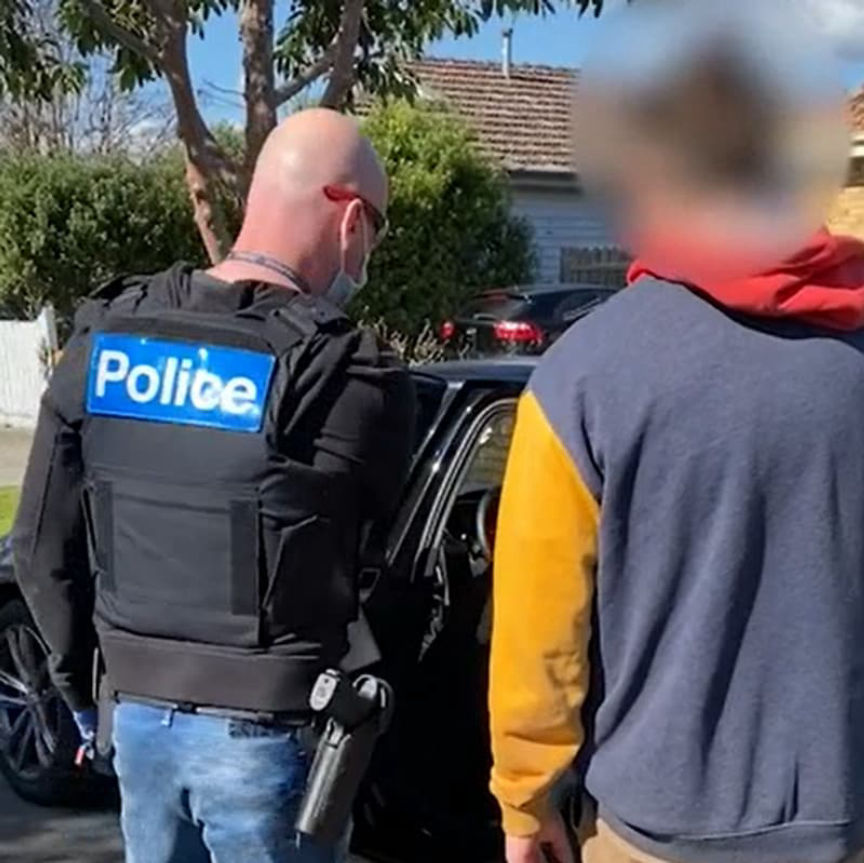
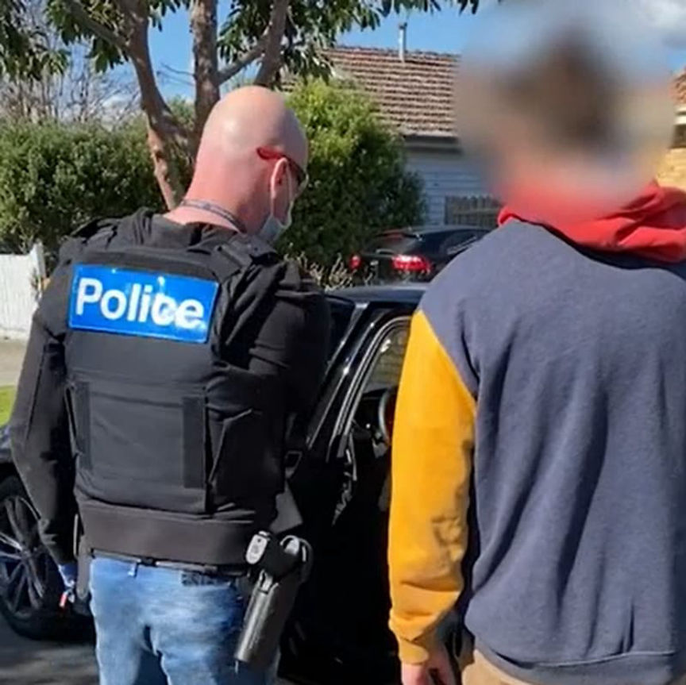

Australian Police Seized $8.5 Million in Cryptocurrency
Police in Victoria, Australia, seized cryptocurrency worth more than $6 million during a darkweb drug trafficking investigation.
During an investigation into a suspected darkweb drug trafficking ring, Victoria police seized $8.5 million in cryptocurrency. The cryptocurrency has links to Silk Road vendors, authorities claimed.

Earlier this year, the United States Federal Bureau of Investigation sent a tip to law enforcement in Australia about suspected darkweb vendors in Australia. Victoria police identified at least two suspects: a 31-year-old woman from Kinglake and a 30-year-old man from Preston. The two are associates, according to the police.
Investigators executed search warrants at multiple properties on August 19, 2021. During these searches, the police discovered and seized a record $8.49 million in cryptocurrency. Australian news outlets are reporting the seized cryptocurrency is Bitcoin. The searches also led to the seizure of undisclosed quantities of cannabis, Psilocin, MDMA, undisclosed prescription medication as well as white powder and crystals believed to be drugs. In addition to the contraband and cryptocurrency, the police also seized various assets, including two properties valued at close to $2 million, a Toyota Prado, a Volkswagen T-Cross, and about $2.6 million cash.

Speaking during the announcement of the results of the investigation, Commander Mick Frewen said:
“This is the 21st-century version of drug trafficking and money laundering, with criminals using technology to enable immense amounts of community harm and misery. Police actively work on these forums and receive information from a wide range of sources including our Australian and international law enforcement partners. There may be a perception that trafficking drugs online is a safer option or one less likely to lead to detection due to relative anonymity, however, this result highlights that this is not the case.”
Commander Frewen said that the investigation into the alleged drug trafficking activity will take “some time” due to the complexity of the case and the fact that the FBI shut the Silk Road down almost eight years ago.
Investigations into the extent of the drug trafficking operation are ongoing.
During an investigation into a suspected darkweb drug trafficking ring, Victoria police seized $8.5 million in cryptocurrency. The cryptocurrency has links to Silk Road vendors, authorities claimed.

Police arrested the Preston man after searching one of his properties.
Earlier this year, the United States Federal Bureau of Investigation sent a tip to law enforcement in Australia about suspected darkweb vendors in Australia. Victoria police identified at least two suspects: a 31-year-old woman from Kinglake and a 30-year-old man from Preston. The two are associates, according to the police.
Investigators executed search warrants at multiple properties on August 19, 2021. During these searches, the police discovered and seized a record $8.49 million in cryptocurrency. Australian news outlets are reporting the seized cryptocurrency is Bitcoin. The searches also led to the seizure of undisclosed quantities of cannabis, Psilocin, MDMA, undisclosed prescription medication as well as white powder and crystals believed to be drugs. In addition to the contraband and cryptocurrency, the police also seized various assets, including two properties valued at close to $2 million, a Toyota Prado, a Volkswagen T-Cross, and about $2.6 million cash.
Commander Frewen described the suspects as “quite unremarkable in every way.”
Speaking during the announcement of the results of the investigation, Commander Mick Frewen said:
“This is the 21st-century version of drug trafficking and money laundering, with criminals using technology to enable immense amounts of community harm and misery. Police actively work on these forums and receive information from a wide range of sources including our Australian and international law enforcement partners. There may be a perception that trafficking drugs online is a safer option or one less likely to lead to detection due to relative anonymity, however, this result highlights that this is not the case.”
Commander Frewen said that the investigation into the alleged drug trafficking activity will take “some time” due to the complexity of the case and the fact that the FBI shut the Silk Road down almost eight years ago.
Investigations into the extent of the drug trafficking operation are ongoing.